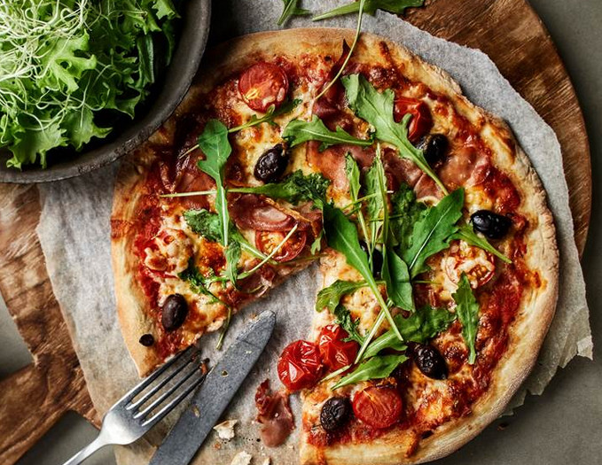

Pizza is yum yum delicious. It can be eaten every day but only if you run a lot.
Pizza can be made from various ingredients. It could be meat delicious, vegetarian superstar or even strawberrys and cream. What you have is up to you but you do need the ingredients to top it with.
The best way to make it is to use your favorite ingredients and then you will always have something you like. That said if you make it with things other people don't like you can have more for yourself.